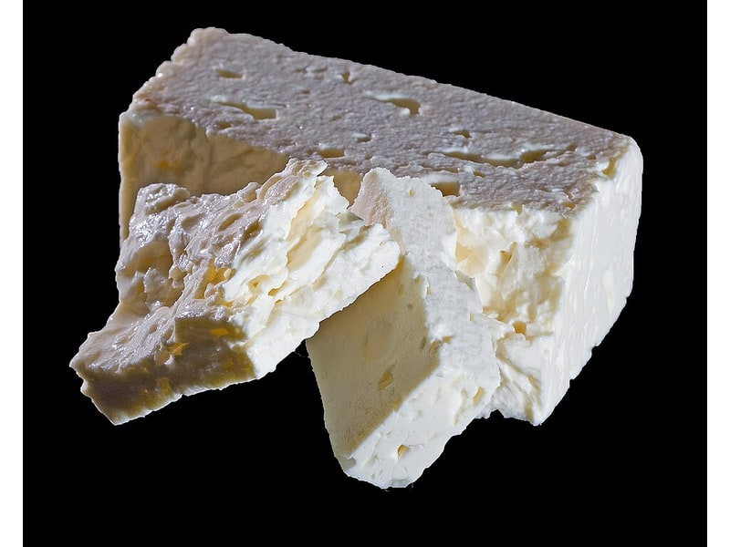

Nabiał i jaja
Ser Feta
Ser Feta to produkt z kategorii Nabiał i jaja. Na 100 g znajdziesz 14 g białka (proteinów), 264 kcal kalorii, 4 g węglowodanów oraz 21 g tłuszczu — idealne dane przy zdrowym odżywianiu, odchudzaniu lub budowie masy mięśniowej. Współczynnik ok. 18.9 kcal na 1 g białka pomaga porównać gęstość odżywczą. Słona – podbija pragnienie.
Kalorie264 kcalna 100 g
Białko / proteiny14 g
Węglowodany4 g
Tłuszcz21 g
Cena (szac.)~4,83 złza 100 g
Ceny zaktualizowano: maj 2026 (szacunek — ceny w popularnych supermarketach)
Porcja: kostka (30g)
| Kalorie | 79 kcal |
|---|---|
| Białko | 4.2 g |
| Węglowodany | 1.2 g |
| Tłuszcz | 6.3 g |
| Cena (szac.) | ~1,45 zł |
Szczegółowe składniki odżywcze na 100 g
| Wartość energetyczna (kalorie) | 264 kcal |
|---|---|
| Białko (proteiny) | 14 g |
| Węglowodany | 4 g |
| Tłuszcz | 21 g |
| Tłuszcze nasycone | 14 g |
| Tłuszcze nienasycone | 7 g |
| Witaminy i minerały | Wapń, Sód, Witamina B2 |
| Współczynnik kcal / 1 g białka | 18.9 |
| Cena produktu (szac. za 100 g) | ~4,83 zł |
| Cena za 100 g białka (szac.) | ~34,52 zł |